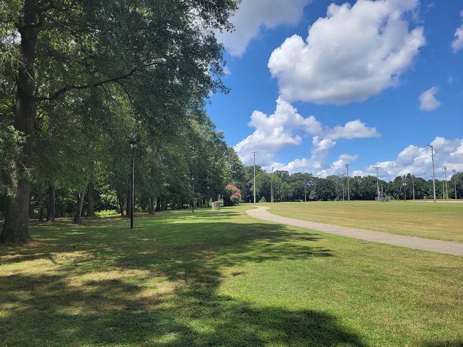

国が出している運動の目安は、歩数と時間と頻度で書かれている
厚生労働省の検討会が2024年1月にまとめたガイドは、成人・こども・高齢者に分けて数字を示しています。成人は1日約8,000歩、筋力トレーニングは週2〜3日。根拠の置き場所まで書かれています。
もとになった資料
- 資料
- 厚生労働省「健康づくりのための身体活動・運動ガイド2023」（令和6年1月）図3、推奨事項、参考情報1
- 写した日
- 立場
- 体づくり・美容の資格も実務経験もない書き手が、原文を写しています
07 / 08 からだを動かす

写真：Legion Field walking path, Austell GA.jpg ／ John Phelan ／ CC BY 4.0 （Wikimedia Commons）
{kind=link}
運動の量については、いろいろな目安が語られています。そのうち国がまとめたものは、名前と日付のついた一冊の文書になっています。
「健康づくりのための身体活動・運動ガイド2023」です。厚生労働省の検討会が令和六年一月にまとめ、2013年の身体活動基準を見直したものにあたります。
成人に示されている四つの数字
ガイドは推奨事項を、身体活動・運動・筋力トレーニング・座位行動の四つに分けて書いています。まず身体活動です。
強度が三メッツ以上の身体活動を、週二十三メッツ・時以上行うことが推奨されています。具体的には、歩行またはそれと同等以上の身体活動を一日六十分以上です。
この量が、一日約八千歩以上に相当するとされています。八千歩という数字は、目標として置かれたのではなく、六十分の歩行から換算して出されたものです。
換算の内訳もガイドに書かれています。六十分の歩行が約六千歩に相当し、三メッツ未満の家事などの生活活動が一日約二千歩に相当するので、合計で約八千歩です。
次に運動です。強度が三メッツ以上の運動を週四メッツ・時以上、具体的には息が弾み汗をかく程度の運動を週六十分以上行うことが推奨されています。
三つ目が筋力トレーニングで、週二〜三日行うことが推奨されています。これは週四メッツ・時の運動に含めてもよいとされています。
四つ目が座位行動です。座りっぱなしの時間が長くなりすぎないように注意する、と書かれています。
立位が難しい人についても一文が置かれています。じっとしている時間が長くなりすぎないよう、少しでも身体を動かすことを推奨する、とあります。
高齢者とこどもには別の数字がある
ガイドは年齢の段ごとに数字を分けています。高齢者については、身体活動を一日四十分以上、約六千歩以上、週十五メッツ・時以上としています。
運動については、有酸素運動・筋力トレーニング・バランス運動・柔軟運動など多要素な運動を週三日以上行うこととされています。
こども版は、身体を動かす時間が少ないこどもを対象にした参考として書かれています。中強度以上の身体活動を一日六十分以上、という数字が置かれています。
あわせて、高強度の有酸素性身体活動や、筋肉・骨を強化する身体活動を週三日以上とされています。余暇のスクリーンタイムを減らすことにも触れています。
推奨値はどこから来たのか
ガイドは、数字の出どころも書いています。週二十三メッツ・時という値は、成人を対象にしたコホート研究のレビューから来ています。
生活習慣病の発症予防に効果のある身体活動量の下限値が、週十九メッツ・時から週二十六メッツ・時の間に分布していて、その平均値が週二十三メッツ・時でした。
日本人を対象とした研究に限ったメタ解析でも、週二十二・五メッツ・時より多い人で効果が期待できると確認された、と書かれています。
運動の側も同じ作りです。効果のある運動量の下限値が週二メッツ・時から週十メッツ・時の間に分布していたことから、その平均値の週四メッツ・時が採られました。
効果の大きさについても記述があります。一日あたり十分の身体活動を増やすことで、生活習慣病の発症や死亡のリスクが約三パーセント低下すると推測されています。
筋トレの量には山がある
筋力トレーニングについては、参考情報の章がもうけられています。ここに、多ければ多いほどよいわけではない、という趣旨の記述があります。
総死亡との関係では、週あたり約四十分でリスク比が最も低くなり、約百四十分でリスク比が一・〇〇に戻る、というレビューの結果が図で示されています。
心血管疾患の発症では、約六十分で最も低くなり、約百三十分で一・〇〇に戻るとされています。二つの図は、いずれもU字に近い形をしています。
ただしガイド自身が、やりすぎの量はまだ明らかではなく、エビデンスが十分でないため今後の研究が必要である、と断っています。
筋力トレーニングの中身についても定義があります。マシンやダンベルを使うものだけでなく、自分の体重を負荷にする腕立て伏せやスクワットも含まれます。
特定の部位だけでなく、胸・背中・上肢・腹・臀部・下肢などの大きな筋群に負荷がかかるように、全身をまんべんなく行うことが勧められています。
健康づくりのための身体活動・運動ガイド2023